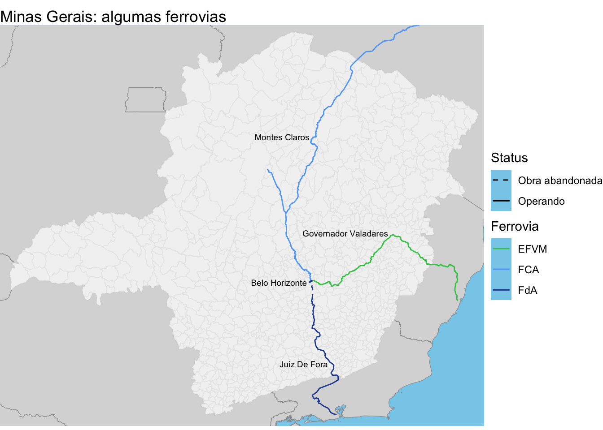

Muitos amigos me perguntam como fazer operações espaciais no R. Então, decidi criar essa rotina muito simples, com o mínimo para começar e algumas operações básicas.
Como eu já disse no post sobre a Base dos Dados: crie um R Project e seja organizado, ajude o você de amanhã! Ele vai agradecer.
Links úteis
A melhor referência que eu conheço para dados espaciais no R: O livro Geocomputation With R.
Mapbiomas: nunca usei, mas é referência para o pessoal que trabalha com meio ambiente.
Shapefiles de ferrovias, rodovias, aeroportos, portos e mais no site do ONTL/EPL
Setup
Defina um bloco de código (Ctrl + Alt + I) para chamar os pacotes necessários. Use a opção #| label: setup, como abaixo, para ele sempre ser executado no começo.
```{r}#| label: setup# geral e tratamento de dadoslibrary(here)```
here() starts at /Users/baarthur/Library/CloudStorage/OneDrive-Personal/Documentos/R/Projects/baarthur.github.io
```{r}#| label: setuplibrary(janitor)```
Attaching package: 'janitor'
The following objects are masked from 'package:stats':
chisq.test, fisher.test
── Conflicts ────────────────────────────────────────── tidyverse_conflicts() ──
✖ dplyr::filter() masks stats::filter()
✖ dplyr::lag() masks stats::lag()
ℹ Use the conflicted package (<http://conflicted.r-lib.org/>) to force all conflicts to become errors
Linking to GEOS 3.11.0, GDAL 3.5.3, PROJ 9.1.0; sf_use_s2() is TRUE
```{r}#| label: setup# bases de dadoslibrary(geobr)library(sidrar)```
Carregando dados
Da internet
Vários shapefiles brasileiros estão disponíveis online. Alguns podem ser baixados direto no R, como o {geobr} e o {aopdata}. Nesse exemplo, vamos baixar o shapefile dos municípios mineiros usando o {geobr}:
Segundo o manual da função read_municipality() (digite ?read_municipality no console ou vá em Help e digite o nome da função), podemos baixar só os municípios de um estado especificando o código do estado ou sua sigla em code_muni, ou ainda baixar apenas uma cidade especificando o seu código de 7 dígitos do IBGE.
Adicionei, ainda, showProgress = FALSE para não mostrar o status do download enquanto baixa. Outra opção é simplified = FALSE para baixar o shapefile mais detalhado possível. Isso é muito mais pesado; na dúvida, não baixe.
Às vezes, um shapefile “dá pau” na hora de fazer as operações que vamos ver lá na frente. Se isso acontecer, use a transformação st_make_valid() para consertá-lo:
Neste exemplo, vamos carregar dois shapefiles para fazer operações espaciais: a malha de municípios mineiros, no formato .shp, e um mapa ferroviário, no formato do Google Earth (.kml). Usando o pacote {sf}, carregamos os shapefiles com st_read(). Supondo que você tem uma pasta chamada shp dentro da pasta data com seus shapefiles:
Os shapefiles do tipo .shp tem pelo menos quatro camadas, em arquivos separados: .dbf, .prj, .shp e .shx. Por mais que na função st_read() nós passemos só o .shp, ela está usando todas as camadas; logo, elas devem estar na pasta também!
Reading layer `Transmineiriana' from data source
`/Users/baarthur/Library/CloudStorage/OneDrive-Personal/Documentos/R/Projects/baarthur.github.io/posts/2023-06-21-rotina-spatial/data/shp/ferrovias.kml'
using driver `KML'
Simple feature collection with 99 features and 2 fields
Geometry type: GEOMETRY
Dimension: XY
Bounding box: xmin: -48.2703 ymin: -23.51613 xmax: -38.40762 ymax: -12.49129
Geodetic CRS: WGS 84
No Quarto (.qmd) e no RMarkdown (.Rmd), usamos a função here() do pacote homônimo para passar endereços relativos. Isso evita a bagunça que acontece com a dupla setwd()/getwd() e a chatice de ficar invertendo barras nos caminhos absolutos. Os endereços relativos são relativos à pasta origem do seu projeto, porque o R Project entende qur você está partindo dali.
Compatibilidade de coordenadas
Existem diferentes padrões de coordenadas (CRS, de Coordinate Reference System): o mais comum é o WGS 84, usado nos GPS e no Google Maps. Mas, como a terra não é plana, alguns padrões são mais adequados para locais diferentes. No Brasil, mapas administrativos costumam usar o Sirgas 2000 e suas variantes. Por isso, temos ficar atentos se nossos shapefiles estão no mesmo padrão! Para verificar:
Coordinate Reference System:
User input: SIRGAS 2000
wkt:
GEOGCRS["SIRGAS 2000",
DATUM["Sistema de Referencia Geocentrico para las AmericaS 2000",
ELLIPSOID["GRS 1980",6378137,298.257222101,
LENGTHUNIT["metre",1]]],
PRIMEM["Greenwich",0,
ANGLEUNIT["degree",0.0174532925199433]],
CS[ellipsoidal,2],
AXIS["geodetic latitude (Lat)",north,
ORDER[1],
ANGLEUNIT["degree",0.0174532925199433]],
AXIS["geodetic longitude (Lon)",east,
ORDER[2],
ANGLEUNIT["degree",0.0174532925199433]],
USAGE[
SCOPE["Horizontal component of 3D system."],
AREA["Latin America - Central America and South America - onshore and offshore. Brazil - onshore and offshore."],
BBOX[-59.87,-122.19,32.72,-25.28]],
ID["EPSG",4674]]
Coordinate Reference System:
User input: WGS 84
wkt:
GEOGCRS["WGS 84",
DATUM["World Geodetic System 1984",
ELLIPSOID["WGS 84",6378137,298.257223563,
LENGTHUNIT["metre",1]]],
PRIMEM["Greenwich",0,
ANGLEUNIT["degree",0.0174532925199433]],
CS[ellipsoidal,2],
AXIS["geodetic latitude (Lat)",north,
ORDER[1],
ANGLEUNIT["degree",0.0174532925199433]],
AXIS["geodetic longitude (Lon)",east,
ORDER[2],
ANGLEUNIT["degree",0.0174532925199433]],
ID["EPSG",4326]]
Nesse exemplo, a malha municipal usa o Sirgas 2000, enquanto o mapa de ferrovias usa o WGS 84. Como eu prefiro o primeiro CRS, vou transformar o seguno para que também fique em Sirgas 2000.
Cada CRS tem um código EPSG associado. No caso do Sirgas 2000 é o 4674, e para o WGS 84, é o 4326. Veja mais em epsg.io.
```{r}#| label: set-crs# Alternativa 1: modificar manualmente inserindo o CRS desejado.shp_ferrovias <- shp_ferrovias %>%st_transform(crs =4674)# Alternativa 2: modificar o CRS de X para que seja igual ao de Y.shp_ferrovias <- shp_ferrovias %>%st_transform(crs =st_crs(shp_mg_muni))```
Filtrar shapefiles
Suponha que queremos filtrar as cidades que são artravessadas pela Estrada Real. Podemos fazer isso com o st_filter(). Mas antes, um resumo sobre as operações espaciais:
O pacte {sf} contém uma série de funções que computam relações topológicas entre objetos espaciais (da classe simple.feature). Por exemplo: st_intersects(x,y) indica se x cruza y; st_covers(x,y), se x cobre y e o contrário por st_covered_by(x,y) e assim em diante. Leia mais sobre essas operações no excelente livro do Robin Lovelace e no site do PostGIS, pois as operações realizadas em SQL são basicamente as mesmsas que o {sf} faz no R.
Essas operações espaciais também podem ser usadas como predicado para filtrar ou juntar dados. Nesse exemplo, vamos usar o predicado st_intersects:
O novo objeto contém 190 municípios: apenas aqueles atravessados pelas ferrovias contidas no .kml. Alternativamente, podemos só salvar o novo objeto em cima do antigo: shp_mg_muni <- shp_mg_muni %>% (...)
Combinar bases
Outra operação poderosa no R é combinar informações de uma base com um shapefile. Nesse exemplo, vamos usar uma base de população municipal do IBGE para cruzar com o shapefile de cidades mineiras.
Baixando dados do IBGE com o SidraR
O Sidra —Sistema IBGE de Recuperação Automática— pode ser acessado diretamente pelo R. Você pode tanto buscar termos específicos, usando search_sidra("termo"), quanto baixar diretamente uma tabela que você já conheça. Vamos usar o exemplo completo: vou buscar informações sobre população.
O resultado retornou mais de 90 tabelas. Como isso é muito confuso, prefiro ir no site do Sidra, ver a tabela que eu quero e baixar no R. No caso, quero a tabela 6579. Vamos ver as opções disponíveis para ela:
```{r}#| label: info_sidrainfo_sidra(6579)```
$table
[1] "Tabela 6579: População residente estimada"
$period
[1] "2001, 2002, 2003, 2004, 2005, 2006, 2008, 2009, 2011, 2012, 2013, 2014, 2015, 2016, 2017, 2018, 2019, 2020, 2021"
$variable
cod desc
1 9324 População residente estimada (Pessoas)
$classific_category
NULL
$geo
cod desc
1 Brazil Brasil (1)
2 Region Grande Região (5)
3 State Unidade da Federação (27)
4 City Município (5.570)
De posse dessas informações, podemos configurar a chamada da função get_sidra():
Considering all categories once 'classific' was set to 'all' (default)
```{r}#| label: get_sidrahead(df_pop)```
Nível Territorial (Código) Nível Territorial Unidade de Medida (Código)
2 6 Município 45
3 6 Município 45
4 6 Município 45
5 6 Município 45
6 6 Município 45
7 6 Município 45
Unidade de Medida Valor Município (Código) Município
2 Pessoas 22516 1100015 Alta Floresta D'Oeste - RO
3 Pessoas 111148 1100023 Ariquemes - RO
4 Pessoas 5067 1100031 Cabixi - RO
5 Pessoas 86416 1100049 Cacoal - RO
6 Pessoas 16088 1100056 Cerejeiras - RO
7 Pessoas 15213 1100064 Colorado do Oeste - RO
Ano (Código) Ano Variável (Código) Variável
2 2021 2021 9324 População residente estimada
3 2021 2021 9324 População residente estimada
4 2021 2021 9324 População residente estimada
5 2021 2021 9324 População residente estimada
6 2021 2021 9324 População residente estimada
7 2021 2021 9324 População residente estimada
E assim, baixamos a população de 2021 para todos os municípios brasileiros. No entanto, essa tabela do IBGE não está organizada da melhor forma pra processamento no R. Podemos melhorar removendo as informações desnecessárias (select()) e limpando os nomes (clean_names() e rename()) para compatibilizar com a outra tabela.
Use os mesmos nomes para variáveis comuns nos dois objetos. Não é obrigatório, mas facilita sua vida; caso contrário, tem que especificar qual variável de x é igual a qual variável de y para dar o join. Como o shapefile do {geobr} vem com nomes padronizados, vamos adotá-la e modificar a base do IBGE.
```{r}#| label: tidy-data# passo 1: limpar nomes (tirar maiúsculas, espaços e outras complicações)df_pop <- df_pop %>%clean_names() # passo 2: remover o que não precismos e renomear. Fazemos isso tudo junto com transmute, na sintaxe novo_nome = nome_antigodf_pop <- df_pop %>%transmute(pop = valor, code_muni =as.numeric(municipio_codigo),year =as.numeric(ano) )```
Ao usarmos transmute, estamos ao mesmo tempo renomeando as variáveis que querendo e removendo as que não estão ali. Note que também passei as.numeric() em code_muni e ano, pois estavam como character. No caso de code_muni, essa informação é numérica (numeric) na base do {geobr}, então ia dar erro no join; já no caso do ano, é porque facilita quando esse tipo de informação é numérica (por exemplo, para filtrar datas maiores do que x).
A informação de nome do município frequentemente está diferente entre bases. Ex.: acentuação, hifens, etc. Para não dar erro, prefira SEMPRE usar o código em vez do nome; repare que até removi o nome da cidade e vou usar apenas o do {geobr}. Nesse caso, a base do IBGE tem a sigla do estado junto do nome do município, como “Abadia dos Dourados - MG”.
Juntando: população e shapefile
Agora é partir para o abraço. Vamos jogar as informações do IBGE no shapefile —ou vice-versa; nesse caso (não é sempre), a ordem não importa.
Podemos customizar esse mapa adiconando camadas e capadas. As duas mais importantes: uma camada para a escala de cores do fill (preenchimento) e outra para o tema.
Existem duas coleções de paletas muito famosas: Brewer e Viridis. A primeira tem cores mais “comuns”, mas a segunda dá um contraste muito bom. Abaixo, as paletas de cada coleção e a sintaxe (substitua XXX pelo tipo de aesthetic em uso: fill, color etc.)
Warning in st_point_on_surface.sfc(sf::st_zm(x)): st_point_on_surface may not
give correct results for longitude/latitude data

Citation
BibTeX citation:
@online{bazolli2023,
author = {Bazolli, Arthur},
title = {Rotina Básica Para Dados Espaciais No {R}},
date = {2023-06-21},
url = {https://baarthur.github.io/posts/2023-06-20-basedosdados/},
langid = {en}
}